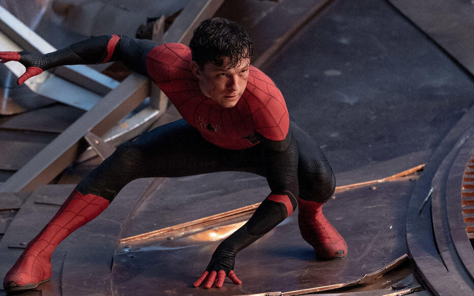
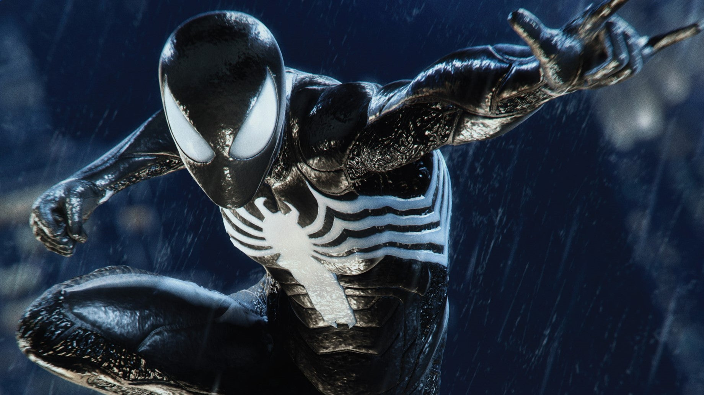
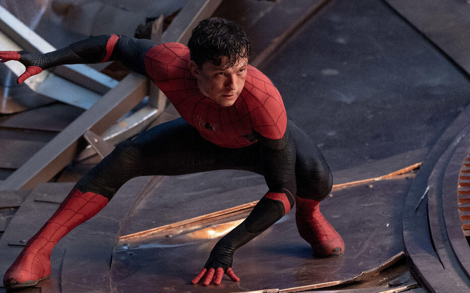
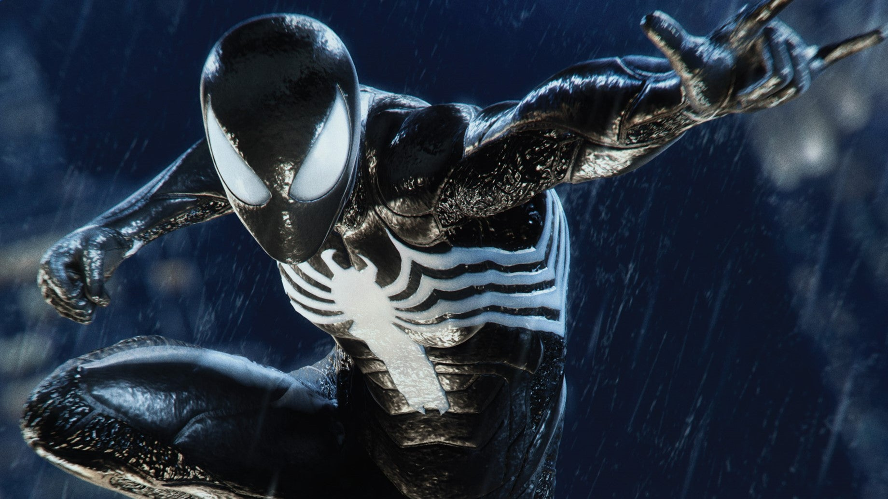
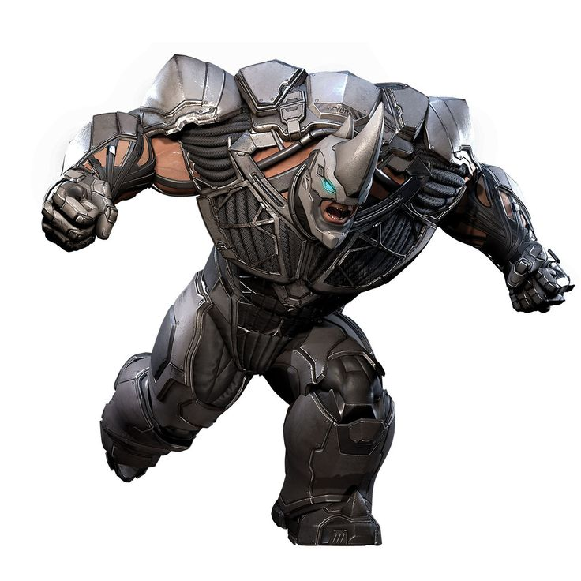
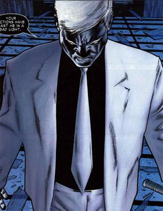
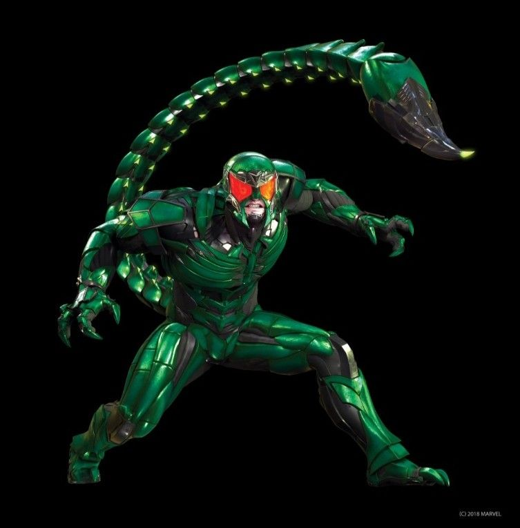
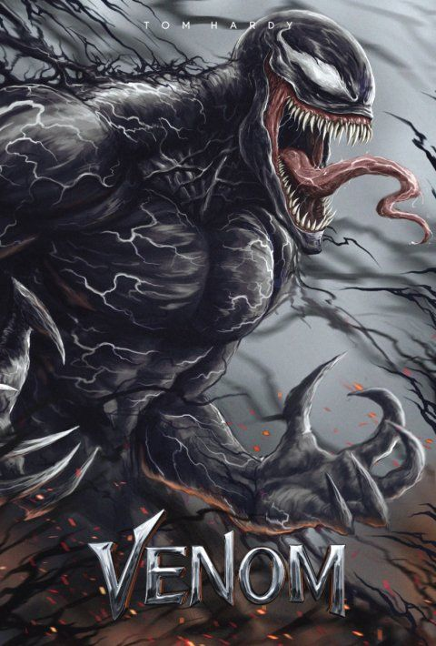

Thomas Stanley Holland, dit Tom Holland, né le 1er juin 1996 à Kingston upon Thames, est un acteur britannique. Il devient mondialement connu en reprenant le rôle du super-héros Spider-Man (précédemment incarné par Tobey Maguire et Andrew Garfield) intégré dans l'Univers cinématographique Marvel, qu'il incarne à partir de 2016 dans Captain America: Civil War, suivi notamment par trois films centrés sur son personnage, Spider-Man: Homecoming (2017), Spider-Man: Far From Home (2019) et Spider-Man: No Way Home (2021).

(acteur Tom HOLLAND) Peter Parker, alias Spider-Man est un super-héros évoluant dans l'univers Marvel de la maison d'édition Marvel Comics. Peter Parker obtient ses pouvoirs grâce à la morsure d'une araignée radioactive.

Parker version Symbiote une bataille cruciale, initée par le Beyonder qui aura des conséquences sur l avenir de nombreux super-héros suite a un combat si rude que le costume du tisseur tombe en lambeaux. Sauf qu’en cherchant à le réparer : Peter tombe sur une petite boule noir (le Symbiote) qui l’entoure sans tarder. C’est ainsi que Spider-Man arbore pour la première fois le célèbre costume noir, avec des yeux, une araignée sur son torse démesurés.
Thomas Stanley Holland, dit Tom Holland, né le 1er juin 1996 à Kingston upon Thames, est un acteur britannique. Il devient mondialement connu en reprenant le rôle du super-héros Spider-Man (précédemment incarné par Tobey Maguire et Andrew Garfield) intégré dans l'Univers cinématographique Marvel, qu'il incarne à partir de 2016 dans Captain America: Civil War, suivi notamment par trois films centrés sur son personnage, Spider-Man: Homecoming (2017), Spider-Man: Far From Home (2019) et Spider-Man: No Way Home (2021).

(acteur Tom HOLLAND) Peter Parker, alias Spider-Man est un super-héros évoluant dans l'univers Marvel de la maison d'édition Marvel Comics. Peter Parker obtient ses pouvoirs grâce à la morsure d'une araignée radioactive.

Parker version Symbiote une bataille cruciale, initée par le Beyonder qui aura des conséquences sur l avenir de nombreux super-héros suite a un combat si rude que le costume du tisseur tombe en lambeaux. Sauf qu’en cherchant à le réparer : Peter tombe sur une petite boule noir (le Symbiote) qui l’entoure sans tarder. C’est ainsi que Spider-Man arbore pour la première fois le célèbre costume noir, avec des yeux, une araignée sur son torse démesurés.

Rhino
Ayant acquis une force surhumaine grâce à une peau artificielle, Aleksei Systevich veut se débarrasser de son armure et de sa réputation de criminel connu sous le nom de Rhino, et il a trouvé un assistant malveillant pour l'aider.
Bien sûr, l'aide de ce génie n'est pas gratuite. Une fois sorti du « Raft », Rhino devra semer le chaos chez un puissant magnat de New York.

Mister Negative est un homme divisé. Pour les citoyens de New York, il est Martin Li, homme d'affaires respecté, philanthrope et fondateur des célèbres refuges F.E.A.S.T. Mais dans le monde clandestin, il est connu sous le nom de Mister Negative, un chef du crime arriviste dirigeant les redoutables Démons intérieurs et détenteur d'une sombre énergie qu'il utilise pour détruire n'importe quoi ou n'importe qui se trouvant sur son chemin.
Obsédé par l'idée de se venger contre un haut fonctionnaire new-yorkais qu'il croit être responsable de ses capacités de corruption, Mister Negative est l'instigateur d'un plan violent qui pourrait vraiment faire pourrir la Grosse Pomme.

Scorpion
Alors qu'il se trouvait derrière les barreaux du « Raft » depuis quelques années, le troublant Mac Gargan a été libéré et son intense rivalité avec Spider-Man resurgit.
En échange de la promesse d'un casier judiciaire vierge, le Scorpion est déterminé à éliminer Spider-Man une fois pour toutes à l'aide de son dard venimeux.

Venom est en réalité un symbiote, un extraterrestre qui fusionne avec un hôte humain. Il apparaît dans le crossover Secret Wars n°8 de décembre 1984 sous les traits d'un costume destiné à Spider-Man, période durant laquelle il dissimule sa véritable nature.
Back To Home